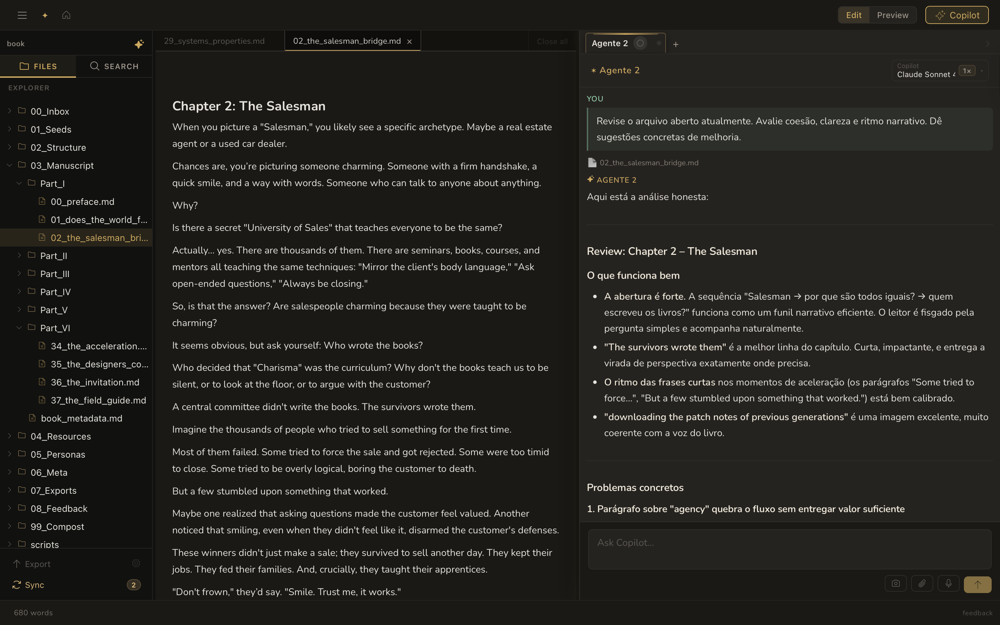
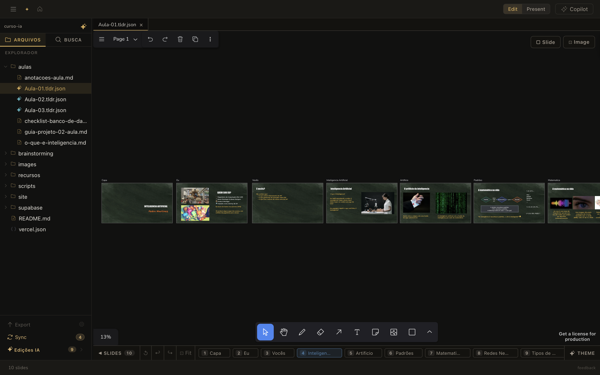
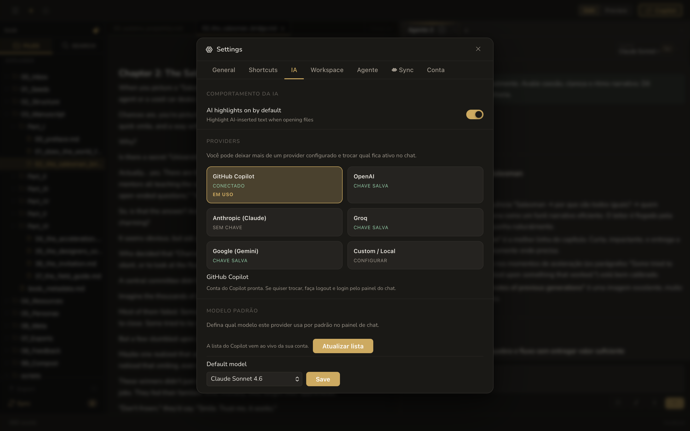

Cafezin is the AI workspace for writers, educators, and creators who want to move faster without giving up their voice or their files.

Draft chapters, lessons, scripts, notes, and outlines with AI that works inside your real project instead of a blank chat box.
Keep plain Markdown files, linked notes, and project structure on your own device so your work stays portable, readable, and reusable for years.
Move from messy thoughts to clear structure: map ideas visually, organize frames, and turn them into slides without switching tools.
AI suggestions stay visible and reviewable, so writers, teachers, and creators keep control of voice, meaning, and final approval.


Write chapters, essays, lesson plans, and research notes in a focused editor built to keep you in flow.
Sketch ideas on an infinite canvas, connect concepts visually, and turn frames into slides without leaving the workspace.
Ask AI to draft, revise, summarize, critique, and help structure your work using the documents and canvas already open in your workspace.
Your files stay on your computer. No mandatory cloud, no hard lock-in, and plain Markdown that remains readable anywhere.
Keep the process, not only the result. Every workspace can preserve your evolution, experiments, and revisions.
Speak your ideas while you drink a coffee, transcribe them fast, and turn them into drafts, outlines, or next steps in the same workspace.
Your assistant for writing books, chapters, essays, and chronicles faster without giving up authorship.
Turn rough notes into dynamic classes, slide-ready frames, and teaching materials with current AI support.
Plan scripts, newsletters, and content systems with AI that helps you move faster while you stay in charge.
Build a serious second-brain workflow with linked notes, local files, and AI grounded in your own workspace.
"I've tried every AI writing tool out there. What pulled me in with Cafezin was being able to see exactly what the AI changed — it marks the edits and I accept or reject each one. Finished two chapters in a week without losing my voice."
"I prep my lectures using notes I've been building for years. Now I open them inside Cafezin, ask the AI to structure an outline and turn it into slides — and it actually reads the documents I have open. Saves me two hours of prep per class."
"I was using four different tools: one for notes, one for outlines, one for AI, one for slides. Cafezin replaced all of them. My whole research project in one place, with AI that knows what I'm working on."
$0 forever
Everything you need to write, plan, and think clearly.
$5 /month
Full AI workflows with the models you already use.
Free forever on macOS and Windows.
No credit card required. Your files never leave your device.